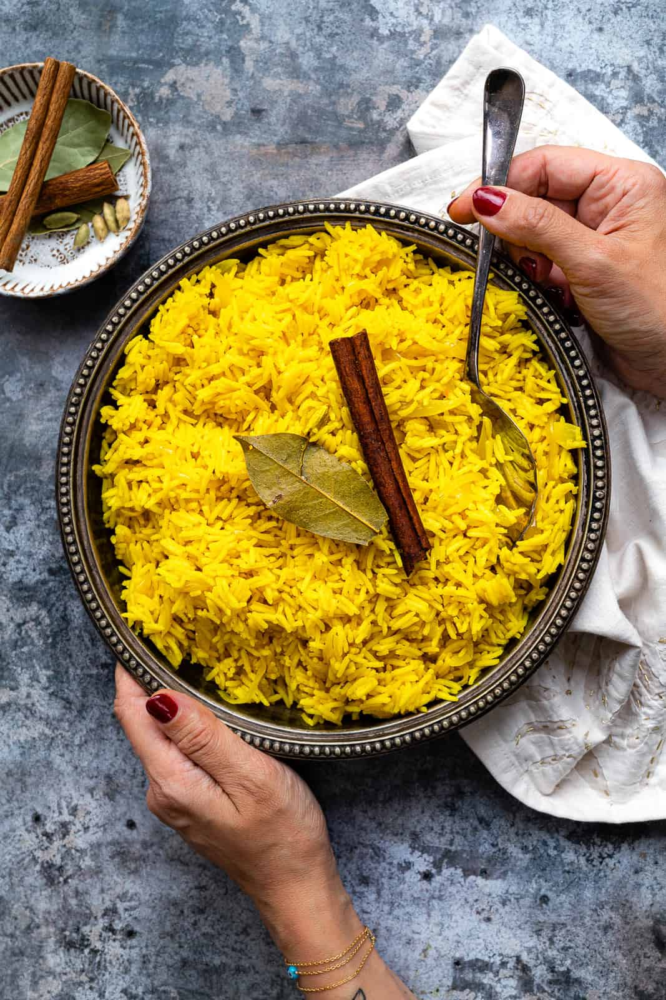

Delicious pilau recipe.

Pilau is a fragrant rice dish cooked in spiced broth, often with meat such as beef, goat, or chicken.
Popular in East Africa and the Middle East, it's known for its deep flavor and aromatic spices.
Pilau is hearty enough for a main meal and is often served at gatherings and celebrations.
Ingredients
- basmati rice
- meat
- vegetable oil
- chopped onions
- garlic
- ginger
- salt and pepper
- cumin, cardamom, cinnamon, cloves, and black pepper
Steps:
- Heat oil in a large pot, add whole spices, and stir until fragrant.
- Add sliced onions and sauté until deeply browned.
- AStir in garlic, ginger, and chopped tomatoes, cooking until soft.
- Add the meat, browning it thoroughly, then season with salt and pilau masala if using.
- Pour in water or stock and simmer until the meat is tender and flavorful.
- Wash the rice, then add it to the pot, stirring to mix evenly.
- Add the correct amount of water (about twice the rice volume), bring to a boil, then cover and reduce heat to low.
- Cook until the rice is fluffy and the liquid is absorbed, then let it rest for a few minutes before serving.
To go back press here